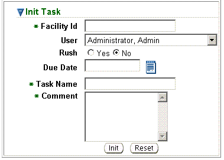

Previous Topic
Next Topic
| Home |
Previous Topic |
Next Topic |
Clicking on Create ToDo Task from the second-level menu of the Home tab opens a page entitled Task. From the Task page you can create a task for yourself, another specified user, or for all users assigned to a role for a selected facility.

The fields in the Init Task window default to your name for User, No for Rush, and the current date for Due Date. The following describes each field entry needed to create a task:
An “*” in the Init Task window marks a field that must be completed in order to create, or initiate, a task. After completing at least the required fields, click Init to create the task. The status line at the top of the page will indicate Success. Or, if you do not wish to create the new task, click Reset to return to the default values in the Init Task window.
Tasks created using this feature appear in the selected user(s) ToDo List. Creating a task creates a single-step workflow which may be viewed from the second-level menu Workflow Diagram page (on the Workflows tab). The Workflow Name for the task in the ToDo List will be INFO + the workflow identifier for the created workflow.
To access the created task and mark it Complete, from the Home tab click on the Task ID in the ToDo List,. This action will open an Aggregate Task listing all of the INFO tasks in the ToDo List, as well as the Task Profile for the task associated with the selected task link. Click the checkbox in the Select column for the task (along with any other tasks you wish to mark Complete) and click Dismiss Selected. This causes any selected tasks to be removed from the Aggregate Task list and marked Complete in the associated workflow(s), after which the task(s) disappear from the user’s ToDo List and the associated workflow(s) no longer appear in any list of active workflows.
Back to Top
Copyright © 1996, 2004, Oracle. All rights reserved.